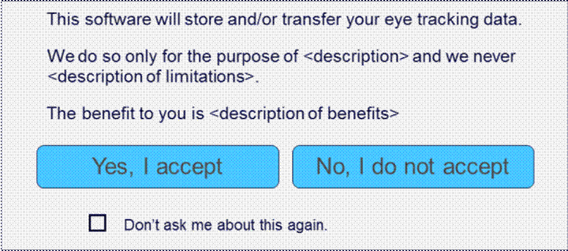

Version dated 7 April 2020
The software and related files that you have downloaded, or otherwise obtained, includes Tobii software which is governed by this license agreement (the Licensed Software). This agreement grants to you limited rights to use the Licensed Software to develop software. Tobii will only provide you with basic support for the Licensed Software that you have downloaded, as described in this document https://www.tobiipro.com/siteassets/tobii-pro/documents/tobii-pro-support-service-description.pdf/.
You may only develop software, using the Licensed Software, for non-commercial research use under this agreement. If you wish to develop software for, or distribute software to, the public or any other third-party for commercial or medical use, then you must obtain a Commercial and/or Medical Use License from Tobii Pro. Please visit www.tobiipro.com for more information.
Please note that the Licensed Software is only for use with Tobii related hardware and software, and you must not use it to develop or evaluate competing eye tracking or behavioural technologies. If you are interested in additional eye tracking or behavioural capabilities or functionality, the right to develop software for commercial purposes, or if you would like to receive increased support and maintenance from Tobii, please contact Tobii Pro at pro.sales@tobii.com.
Tobii Pro AB (reg. No. 556914-7613), having its registered office at Karlsrovägen 2D, SE-182 53, Danderyd, Sweden ("Tobii"), grantsyou (hereinafter referred to as "You") a license to use the Licensed Software according to the following terms and conditions. This agreement, including any appendices, is hereafter referred to as the "Agreement". Both Tobii and You are a "Party" to this Agreement and referred to together as the "Parties". You enter into this Agreement by installing or using the Licensed Software.
WHEREAS, Tobii is a supplier of hardware and software solutions, either standalone or as part of third-party products, for eye tracking and behavioural analysis that contain Intellectual Property Rights owned by Tobii ("Tobii Eye Tracking"), and You desire to license from Tobii certain Licensed Software as defined by this Agreement, and any other use of the Licensed Software requires a separate agreement between the Parties.
BEFORE USING THE LICENSED SOFTWARE PLEASE READ THIS AGREEMENT CAREFULLY. BY DOWNLOADING, INSTALLING, USING, ACCESSING OR DISTRIBUTING THE LICENSED SOFTWARE YOU AGREE THAT:
i) YOU HAVE READ AND UNDERSTOOD THE TERMS AND CONDITIONS BELOW;
ii) YOU AGREE TO BE BOUND BY THE TERMS OF THIS AGREEMENT; AND
iii) UNLESS SPECIFICALLY EXCLUDED BY AN EXISTING AGREEMENT BETWEEN YOU AND TOBII, THIS IS THE COMPLETE AND EXCLUSIVE STATEMENT OF THE RIGHTS AND LIABILITY BETWEEN YOU AND TOBII IN RELATION TO YOUR USE AND DISTRIBUTION OF THE LICENSED SOFTWARE, AND THIS AGREEMENT SUPERSEDES ALL PRIOR COMMUNICATIONS AND AGREEMENTS BETWEEN YOU AND TOBII REGARDING THE LICENSED SOFTWARE.
You may only enter into this Agreement and use the Licensed Software if You are legally permitted to enter into a binding contract with Tobii.
The terms of this Agreement will apply to any updates that Tobii makes available to you. You agree that updates may require you to change or update your application and may affect your ability to use, access or interact with the Licensed Software.
Tobii may amend this Agreement at any time, without notice to You, by posting the revised terms on its website tobii.com.
The terms below are defined as follows under this Agreement:
"Appendix" means an addendum to this Agreement.
"Basic Support" means support in accordance with Tobii’s Basic Support contract.
"Commercial License" means a Software Development License Agreement with Tobii that permits commercialisation of the Licensed Software.
"Eye Tracking Data" means data about a user’s eye gaze, eye images, pupil size, facial expression, behaviour, presence, head pose or position from Tobii Eye Tracking, in raw or processed form, on its own or in combination with other information.
"Intellectual Property Rights" means patents, rights to apply for patents, trademarks, trade names, service marks, domain names, copyrights and all applications and registrations of such worldwide, schematics, industrial models, inventions, know-how, trade secrets, computer software programs and other intangible proprietary information.
"Licensed Software" means the Tobii Pro SDK and/or Tobii Pro Glasses 2 API and/or Tobii Pro Glasses 3 API downloaded and obtained by You directly or indirectly from Tobii, including all included files, directories, documentation and associated API function calls.
"Medical Use License" means a Software Development License Agreement with Tobii that permits commercialisation of the Licensed Software for Medical Use.
"Research Community" means the community of researchers that work for, and provide research to, academia and not for profit organisations.
"Your Software" means software developed by You, including all object code, source code, and any related documentation.
1.1 Tobii grants You limited rights to use the Licensed Software subject to the restrictions outlined in this Agreement.
1.2 Your use of the Licensed Software is strictly permitted solely to develop Your Software for your own research, use and distribution within the Research Community and non-commercial use outside of the Research Community ("Your Use").
2.1 Subject to Sections 2.2, 3 and 7, Tobii grants You a limited, non-exclusive, non-transferable, non-sublicensable, revocable, license:
a) to use the Licensed Software solely to develop Your Software for Your Use, and
b) to distribute any binary files in the Licensed Software, or the binary form of example source code, in the Licensed Software, only as part of Software developed by You, and
c) to any Intellectual Property Rights owned by Tobii covering binary files, or example source code, in the Licensed Software, necessary for Your Use.
2.2 The license rights in this Section 2 are conditional upon compliance with all terms in this Agreement and, specifically, the following:
a) You may not commercialise, sell, lease or profit from Your Software. If You wish to commercialise Your Software, or distribute outside of the Research Community, then You must contact Tobii Pro at pro.sales@tobii.com to arrange a Commercial License.
b) You may not use the Licensed Software on eye tracking platforms other than those produced by Tobii, or platforms that include Tobii hardware.
c) If Your Software stores or transfers Eye Tracking Data, then You must comply with the Eye Tracking Data Transparency Policy in Appendix A of this Agreement.
d) If Your Software implements an API of its own, which exposes Eye Tracking Data to other third-party software, then You must ensure that:
i) the other third-party software is for non-commercial use and that it will not be distributed outside of the Research Community, and
ii) that it complies with the Eye Tracking Data Transparency Policy in Appendix A of this Agreement.
3.1 Except as expressly permitted by this Agreement, You will not, nor permit or authorise anyone to:
a) distribute, convey, lend, lease, share, sell, transfer, sublicense, rent, or time share the Licensed Software, or any of its components or license files, or permit third parties to download or install the Licensed Software.
b) copy, decompile, disassemble or reverse engineer or otherwise attempt to extract or derive the source code or any methods, algorithms or procedures from the Licensed Software, or modify, adapt, translate or create derivative works based upon the Licensed Software except as otherwise expressly permitted by applicable law.
c) take any other steps to derive design information regarding the Licensed Software.
d) use the Licensed Software if You are a competitor of Tobii.
e) remove any copyright, trademark or other proprietary notice from the Licensed Software.
f) alter or circumvent any product, key or license restrictions or limitations on the Licensed Software to defeat any restrictions on access or use.
Except for the licenses explicitly granted to You, Tobii retains all right, title, and interest in and to the Licensed Software, including all updates and modifications and derivative works created, whether or not specifically recognised, registered, or perfected under the laws of the country in which the Licensed Software is located. You do not own any rights, including the copyright and any other Intellectual Property Rights, in the Licensed Software. Your rights to use the Licensed Software are strictly as specified in this Agreement.
The Licensed Software may report anonymous usage statistics and/or error and bug reports to Tobii's servers in order to identify problems that may affect the technical stability and/or overall quality of the application, as well as inform Tobii which of the program components have been in use. For the avoidance of doubt, this data does not include Eye Tracking Data.
Tobii will only provide You with Basic Support for the Licensed Software as described in the following document https://www.tobiipro.com/siteassets/tobii-pro/documents/tobii-pro-support-service-description.pdf/. Tobii will not provide You with maintenance of the Licensed Software and will have no obligation to provide updates to it.
7.1 Medical Use: You may only
develop Your Software for Medical Use that is for non-commercial research purposes,
within the Research Community. "Medical Use" is any use in medically
classified devices or environments, for instance hospitals, surgeries, or other
healthcare environments. Examples of Medical Use include systems for Assistive
and Alternative Communication (AAC), medical condition assessment
solutions, vision or eye condition solutions and solutions or systems intended
to be used in hospitals, surgeries and doctor’s consulting rooms. If you wish
to commercialise Your Software for Medical Use, or distribute it outside of the
Research Community, then you must contact Tobii Pro at pro.sales@tobii.com
to arrange a Medical Use License.
High-Risk Use: You have no right to develop Your Software for High-Risk
Use under this Agreement. "High Risk Use" is use in any environment
where failure or fault of any kind could lead to death or serious bodily injury
of any person, or to severe physical or environmental damage. High Risk Use
includes, but is not limited to, aircraft navigation, control of other modes of
human mass transportation, military applications and control of nuclear or
chemical facilities. If you wish to use the Licensed Software for High-Risk
Use, then you must contact Tobii Pro.
8.1 In no event will Tobii be liable for the following, whether arising out of the use of or inability to use the Licensed Software or for any other reason, even if it has been advised of the possibility of such damages: (a) indirect, incidental, special or consequential damages; (b) loss or corruption of data or interrupted or loss of business; or (c) loss of revenue, profits, goodwill or anticipated sales or savings. All liability of Tobii, its affiliates, officers, directors, employees, agents and suppliers collectively, to you, whether based in warranty, contract, tort (including negligence), or otherwise, and your exclusive remedy will not exceed USD $100. Some jurisdictions do not allow the limitation or exclusion of liability. Accordingly, some of the above limitations may not apply to You. To the extent that Tobii may not, as a matter of applicable law, disclaim any implied warranty or limit its liabilities, the scope of duration of such warranty and the extent of Tobii’s liability shall be the minimum permitted under such applicable law.
8.2 You agree to indemnify, defend and hold harmless Tobii and its licensors, affiliates, contractors, officers, directors, employees or agents from any and all third-party claims, liabilities, damages, costs and expenses, including reasonable attorney fees, arising from your violation of any provision of Sections 2 and 3 of this Agreement.
9.1 This Agreement remains in force until termination (the "Term").
9.2 Tobii may terminate this Agreement at any time for convenience by providing You with thirty (30) days written notice.
9.3 If You materially breach this Agreement, or are declared bankrupt, placed into receivership, liquidation or similar mechanism, this Agreement terminates automatically without notice.
9.4 Upon termination, all obligations relating to the ownership of the Licensed Software and any indemnification or liability obligations survive.
9.5 Upon termination, all rights and licenses granted in this Agreement shall immediately and automatically terminate.
10.1 Confidential Information. "Confidential Information" of a Party means all confidential or proprietary information of the Party, in written, graphic, machine readable or other tangible form (including, without limitation, research, product plans, products, services, the presence of this Agreement, equipment, customers, markets, software, inventions, discoveries, ideas, processes, designs, drawings, formulations, specifications, product configuration information, marketing and finance documents, prototypes, samples, data sets, and equipment, including all information not generally known to the public and the terms of this Agreement.
10.2 Confidentiality Undertaking. All Confidential Information relating to a Party will be held in confidence by the other Party to the same extent and with at least the same degree of care as such Party protects its own confidential or proprietary information of like kind and import, but in no event using less than a reasonable degree of care. Neither Party may disclose, reverse engineer, duplicate, publish, release, transfer, or otherwise make available Confidential Information of the other Party in any form to, or for the use or benefit of, any person or entity without the other Party’s prior written consent. Each is entitled to disclose relevant aspects of the other Party’s Confidential Information to its officers, directors, employees, agents and subcontractors to the extent that the disclosure is reasonably necessary for the performance of its duties and obligations under this Agreement and the disclosure is not prohibited by applicable laws and regulations. Each Party will establish commercially reasonable controls to ensure the confidentiality of the Confidential Information and to ensure that the Confidential Information is not disclosed contrary to the provisions of this Agreement and applicable privacy laws and regulations. Without limiting the foregoing, each Party will, at a minimum, implement technical, administrative and physical measures as are necessary to: (a) ensure the security and confidentiality of the Confidential Information; (b) protect against any threats or hazards to the security and integrity of the Confidential Information; and (c) protect against any unauthorized access to or use of the Confidential Information. If a Party delegates any duties and responsibilities under this Agreement to an agent or other subcontractor in accordance with the terms of this Agreement, the Party will ensure that its agents and subcontractors adhere to the same requirements as the Party is required to comply with under this Agreement.
10.3 The obligations in Section 10.2 do not restrict any disclosure by either Party
(a) pursuant to any applicable law or by order of any court or government agency (provided that the disclosing Party gives prompt notice to the non-disclosing Party of the order and cooperates, at the disclosing Party’s expense in any effort to comply with or to contest the order), or (b) to either Party’s accountants, legal advisors, auditors, and financial advisors. Further, the obligations in Section 10.2 do not apply to information that is:
(i) developed by the other Party without reference to the disclosing Party’s Confidential Information or without violating the disclosing Party’s Intellectual Property Rights,
(ii) or becomes publicly known (other than through unauthorized disclosure),
(iii) disclosed to, or learned by, the recipient from a third party free of any obligation of confidentiality, and
(iv) already known by such Party without an obligation of confidentiality other than pursuant to this Agreement or any confidentiality agreements entered into before the Effective Date between Tobii and Company.
10.4 Upon request or upon termination of this Agreement for any reason, the receiving party will return, destroy, or cause the destruction of any and all records or copies of records relating to the disclosing party or its business, including Confidential Information (except for Confidential Information of the disclosing party that is rightfully contained in the receiving party’s work papers; provided that the receiving party maintains the confidentiality of the Confidential Information as required herein), according to the disclosing party’s instructions or relevant industry best practices if no instructions are provided. Upon request, the receiving party will certify in writing that all of the disclosing party’s Confidential Information has been so returned or destroyed.
11.1 Assignment: This Agreement, and the rights and obligations herein, are not assignable or transferable by the Licensee under any circumstance, except as may be provided elsewhere in this Agreement.
11.2 NO WARRANTY: EXCEPT AS SPECIFICALLY PROVIDED HEREIN TOBII MAKES NO WARRANTY, EITHER EXPRESS OR IMPLIED, RELATING TO THE LICENSED SOFTWARE, AND TOBII FURTHER EXPRESSLY DISCLAIMS, TO THE EXTENT PERMITTED BY APPLICABLE LAW, ALL WARRANTIES AND CONDITIONS OF ANY KIND RELATED THERETO, WHETHER EXPRESS OR IMPLIED, INCLUDING, BUT NOT LIMITED TO ANY IMPLIED WARRANTIES AND CONDITIONS OF MERCHANTABILITY, ACCURACY, OR FITNESS FOR A PARTICULAR PURPOSE.
11.3 Governing Law: This Agreement, including its appendices, will be governed by, and construed according with, the laws of Sweden (without regard to conflict of laws principles), all rights and remedies being governed by said laws. Any dispute or conflict under this agreement shall be finally settled by arbitration administered by the Arbitration Institute of the Stockholm Chamber of Commerce, in accordance with its rules. The seat of the arbitration shall be Stockholm and the tribunal shall comprise of one (1) arbitrator. The language of the arbitration shall be English.
11.4 Disclaimer and Injunctive Relief: The parties specifically disclaim the application of the UN Convention on Contracts for the International Sale of Goods. Regardless of the above governing law, either party may seek interim injunctive relief respect to any alleged breach of such party's Intellectual Property Rights or other proprietary rights.
If Your Software stores or transfers Eye Tracking Data, then You must comply with this policy and as such, Tobii requires the following to be implemented into Your Software:
Active User Acceptance: Your Software needs to use a consistent format to ask the user, explicitly and clearly, for their permission to store, or transfer, their Eye Tracking Data. This request for permission must happen before the user’s data is stored or transferred. It also needs to state the purpose of storing/transferring Eye Tracking Data and that such data will not be used for any other purpose.
Visualisation: Your Software must show the user when the storing or transferring of Eye Tracking Data is taking place. You must provide a mechanism for visualisation. This is required unless explicitly waived by Tobii.
Tobii recommends that the following is implemented into Your Software:
The "What’s in it for me" policy: Clearly inform users about the value they will receive from Your Software. This is about giving the user clear guidance and motivation about why they should provide their Eye Tracking Data to You.
Please note that the implementation of this policy may vary between different categories of products. For screen-based products, a window, such as the one below, is recommended for the Active User Acceptance and What’s in it for me policy.

Compliance with this Policy is Your responsibility and Tobii has the right to request a Compliance Review.
Further information about the policy can be found at transparency.tobii.com. Upon receipt by Tobii of all information requested regarding Your Software, Tobii will provide You with a response regarding your compliance with this Policy, in the form of:
a) Approval of Your Software and confirmation that it is compliant with this Policy;
b) A request to alter Your Software to comply with this Policy; or
c) A request for more information.
Revoked License
If Tobii requests a Compliance Review of Your Software and You refuse to do so, or Tobii finds that Your Software does not comply with this Eye Tracking Data Policy and/or You do not implement the requested changes suggested by Tobii within the agreed timeframe, then Your license to the Licensed Technology may be immediately terminated.
Your Software shall clearly present in an "About box" or other corresponding notice visible to the End User:
(i) the Tobii Pro logotype in reasonable size; and
(ii) the text "This application is powered by Tobii Pro" in standard font size.
MEDICAL USE LICENSE
MEDICAL USE TERMS & CONDITIONS
1. Licensee acknowledges that the Licensed Technology is not fault tolerant and, accordingly, is not designed, intended or allowed for use in any situation where failure, or fault of any kind, could lead to death, or serious bodily injury, of any person.
2. Licensee is prohibited from developing software which is designed, intended or allowed for use in any situation where failure or fault of any kind could lead to death, or serious bodily injury, of any person, including any medical, surgical, or other use intended to support or sustain life.
3. Any Medical Use whatsoever, is solely and completely at Licensee’s own risk, cost and liability.
4. Licensee is solely responsible for any work and/or certifications required to enable Your Software for such Medical Use.
5. Tobii shall in no case have any liability whatsoever (whether to Licensee or to any third party) for the Licensee’s use of the Licensed Technology, or Your Software, in any such manner.